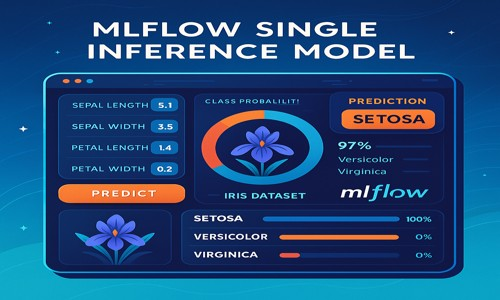

MLflow Docker Project
Iris Classifier & MLOps

This end-to-end machine learning project showcases experiment tracking, model versioning, and containerized reproducibility using MLflow and Docker. A RandomForestClassifier is trained on the classic Iris dataset and tracked for metrics and input signature.
Key Features:
- Tracks model metrics and parameters using MLflow
- Includes Dockerfile for reproducible training and deployment
- Logs model input/output signature and accuracy
- Demonstrates lightweight MLOps best practices
Why It’s Valuable:
This project bridges the gap between data science and DevOps, illustrating how to build, track, and run machine learning projects reliably across environments.